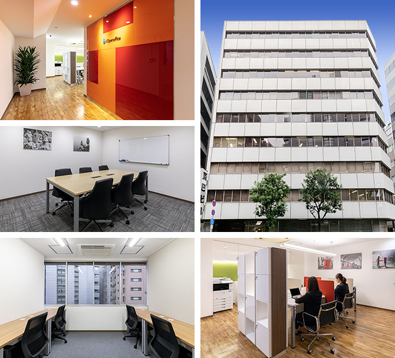
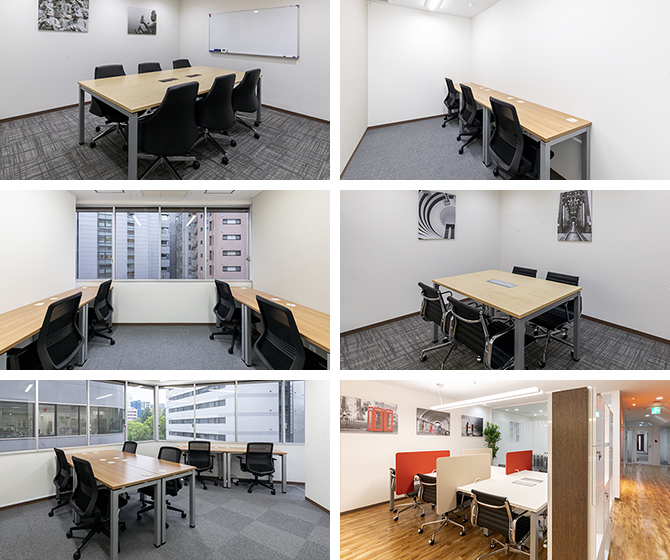
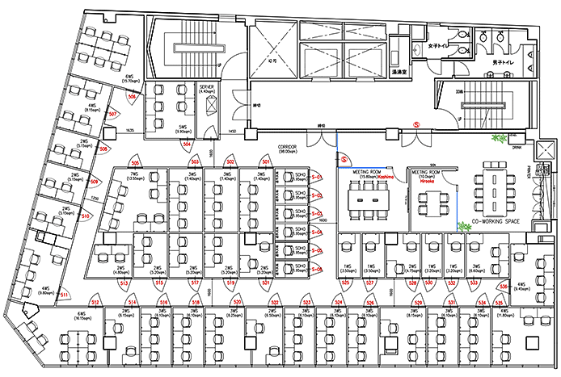

【個室レンタルオフィス】
オープンオフィス大阪肥後橋
- オフィス詳細
- 周辺ガイド
オープンオフィス大阪肥後橋がNEW OPEN
オープンオフィス大阪肥後橋センターは、大阪市のビジネスの中心エリアである、大阪市西区京町堀に位置するレンタルオフィス・コワーキングスペースです。大阪の主要道路のひとつ、四ツ橋筋に面しており、地下鉄四ツ橋線「肥後橋駅」より徒歩6分、同じく四ツ橋線、御堂筋線「本町駅」、「御堂筋駅」へも徒歩10分未満と大阪エリア各所へのアクセスに優れたロケーションになっております。

オープンオフィス大阪肥後橋が提供するオフィスサービス
-
 高速インターネット＜光ファイバー＞
高速インターネット＜光ファイバー＞
- 100Mbpsの光ファイバーによるブロードバンド環境をご用意しました。各部屋に配線済みですので、パソコンに繋げばすぐLAN経由で高速インターネットを利用出来ます。
-
 ネットワーク・カラーレーザープリンタ+スキャナー
ネットワーク・カラーレーザープリンタ+スキャナー
- ネットワークを利用して、各お部屋のパソコンから印刷できます。プリンタをご用意いただく必要もございません。
スキャナー機能も搭載しております。
-
 カラーレーザーコピー
カラーレーザーコピー
- フロア内にご用意してあります。カード方式でコピーが出来ますので、小銭の準備が不要です。
-
 ICカードキーによる入室管理
ICカードキーによる入室管理
- 専用ICカードを使ったホテル式のスマートシステムを用いて、セキュリティーを向上させています。
-
 ミーティングルーム（会議室）
ミーティングルーム（会議室）
- 商談・会議にご利用いただける共有スペースをご用意しています。インターネットで簡単に予約をしていただけます。
-
 無線LAN（WiFi）
無線LAN（WiFi）
- 共有スペースとミーティングスペースにて、無線LAN(WiFi)サービスをご利用いただけます。

オープンオフィス大阪肥後橋の特徴

大手企業集まる肥後橋エリア
肥後橋駅・本町駅、御堂筋駅の3駅至近
関西主要エリアへ抜群のアクセス
大阪支店・営業所としても最適
起業時のオフィスにも最適
オフィス周辺のMap
オープンオフィス大阪肥後橋近隣のスポット
- ■銀行
- 三菱UFJ銀行 大阪中央支店
百十四銀行 大阪支店
りそな銀行 御堂筋支店
中国銀行 大阪支店
京都銀行 大阪支店
北陸銀行 大阪支店
愛媛銀行 大阪支店 - ■レストラン
- ハジメ （フレンチ理）
トムクリオーザ （イタリアン）
鮨処 多田 （寿司）
中国菜 火ノ鳥 （中華）
野口太郎 （割烹）
- ■ホテル
- ハイアットリージェンシー大阪
ホテルニューオータニ大阪
スイスホテル南海大阪
ザ・リッツ・カールトン大阪
大阪マリオット都ホテル
- ■レジャー
- コナミスポーツクラブ北浜
- ■映画館
- OHOシネマズ梅田
大阪ステーションシティシネマ
オープンオフィス大阪肥後橋の住所・アクセス
- 住所:
- 大阪府大阪市西区京町堀1-3-13 辰巳ビル 5F
- 空港からのアクセス:
- 関西国際空港から南海難波駅、なんば駅を経由し「肥後橋駅」まで約60分
関西国際空港からリムジンバスでハービス大阪まで約60分 肥後橋までタクシーで10分
大阪空港（伊丹空港）から、大阪モノレール千里中央駅を経由し「肥後橋駅」まで約45分
大阪空港（伊丹空港）からリムジンバスでハービス大阪まで約25分 肥後橋までタクシーで10分 - 電車からのアクセス:
- 地下鉄四ツ橋線「肥後橋駅」7番出口より徒歩6分
地下鉄四ツ橋線・御堂筋線・中央線「本町駅」25番出口より徒歩8分
地下鉄御堂筋線・京阪本線「淀屋橋駅」11番出口より徒歩8分
- お車でのアクセス:
- 四ツ橋筋面す 「京町堀1」交差点至近
オープンオフィス大阪肥後橋のフロアマップ
5F

※フロア内は禁煙です。
※こちらはイメージ図となりますので、状況が異なる場合は現況を優先させていただきます。
- ◆初回納入金
- 利用料1ヶ月分の保証金
- ◆共益費
- 水道光熱費、ビル共益費、ゴミ出し、フロア・トイレの清掃、共有部分の消耗品代を含みます。
リージャスグループの説明
リージャス・グループは、柔軟なワークスペースを提供する世界最大の企業です。そのネットワークは世界120カ国1,100都市、3300拠点に及びます。会員数は250万人で、業界で成功を収める大小様々な企業や起業家の方々にご利用いただいています。
リージャスは、個室タイプのレンタルオフィス、コワーキングスペースなど多彩なオフィスプラン、近年需要が高まるモバイルワークやバーチャルオフィス、障害復旧サービスの提供を通じ、お客様が予算やワークスタイルに合わせて仕事を行うことができる環境を提供いたします。